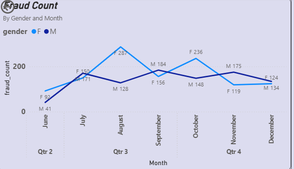
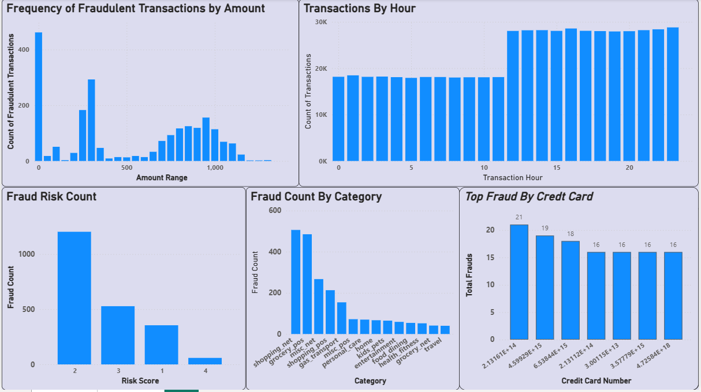
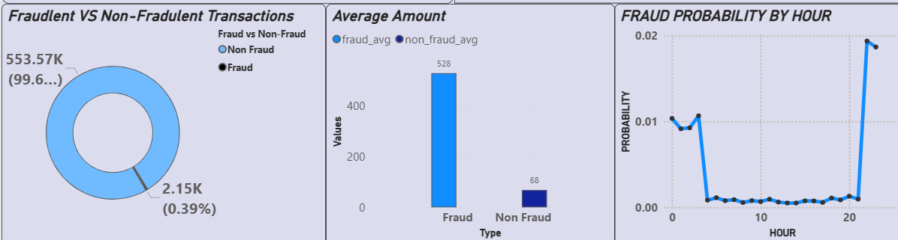

Concept
Fraud analysis built around explainability and action.
The project combines transaction preparation, feature engineering, and Power BI storytelling to help teams identify suspicious activity across amount, time, category, and geography.
An interactive fraud monitoring project built in Power BI to surface anomalous transaction patterns, risky time windows, and location-driven fraud trends.

The project combines transaction preparation, feature engineering, and Power BI storytelling to help teams identify suspicious activity across amount, time, category, and geography.
The analysis began with peak fraud timing and regional patterns, then expanded into category and amount-based risk analysis using DAX-driven views and layered filters.



Explore the project source, files, and implementation context in more detail.
Open GitHubReturn to the main portfolio and continue browsing the full analytics project set.
Back to Portfolio